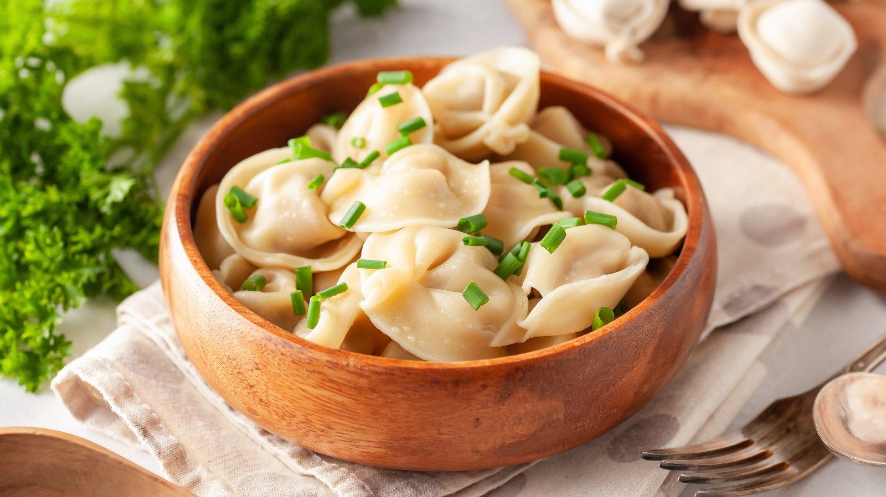
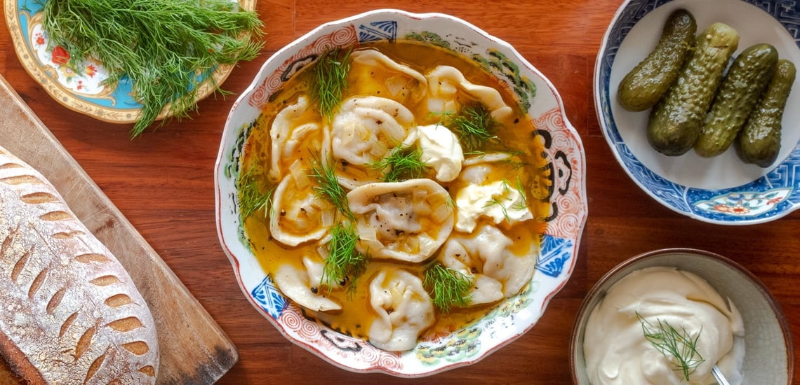
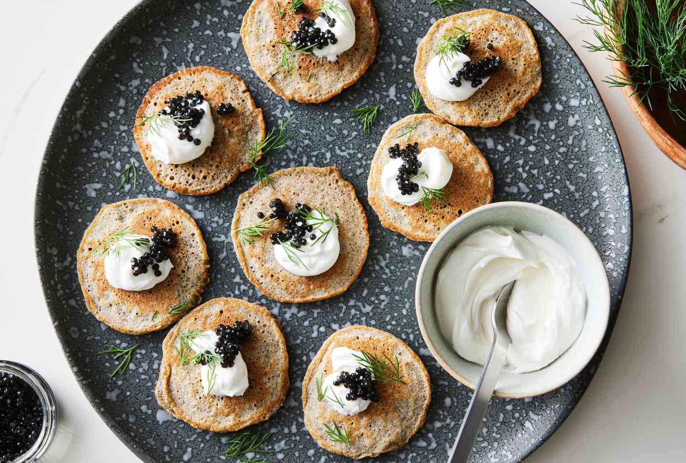
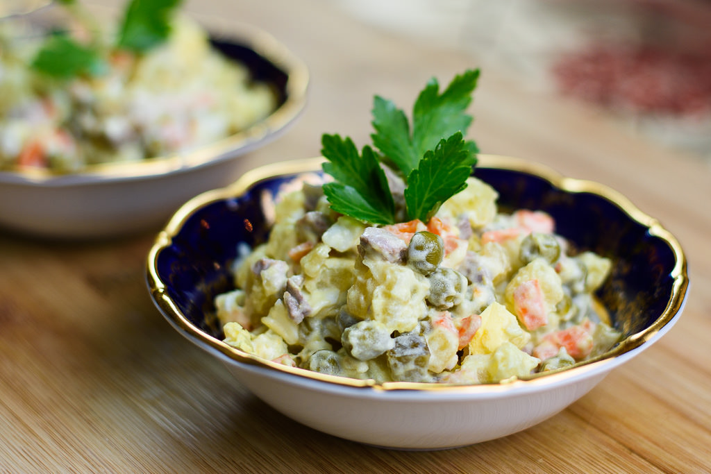
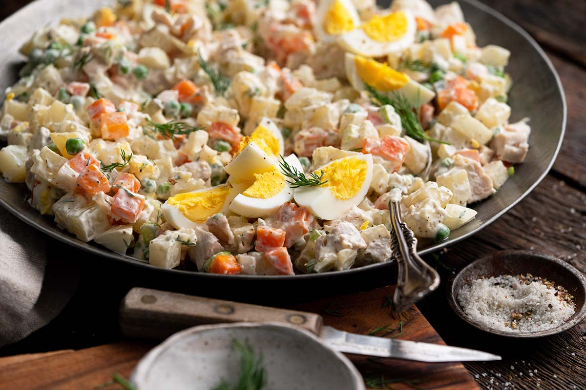
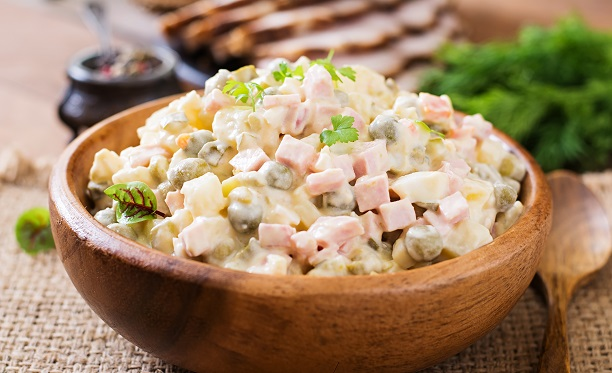
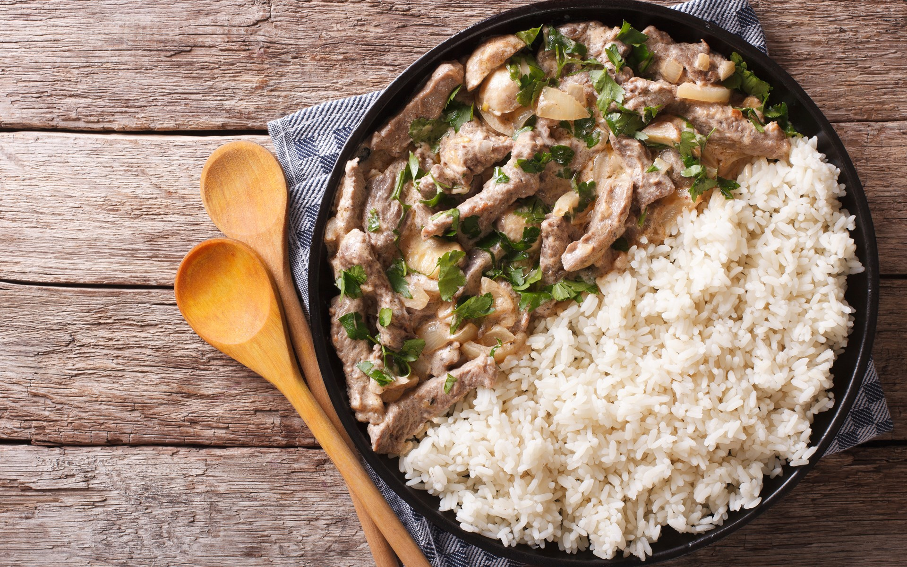

Pelmeni



Pelmeni is the Russian version of boiled dumplings, believed to have origins influenced by
Chinese merchants who visited Siberia in the 15th century. These bite-sized parcels are made
from unleavened dough, filled with ground meat like pork, lamb, chicken, or beef, and flavored with onion,
garlic, pepper, and spices. Often enjoyed in the cold climate, Siberians would freeze pelmeni outdoors in large
batches, preserving them for winter.
Blini



Blini is a Russian pancake that resonates with French crepes.
It is a go-to Russian cuisine that elates the soul of food enthusiasts.
These delicate Russian pancakes are thin & round and have a sweet & savory taste.
Blini is both a comfort food and a cherished treat. The recipe of Blini includes flour,
eggs, milk, sweet cottage cheese, sour cream, honey, etc. This comfort food in Russia plays
a significant role in celebrations and rituals of the country. Blini is a part of a traditional
Russian festival called Maslenitsa, where people celebrate their love for the dish
Olivier Salad



If you’ve spent a few days in Russia and are starting to feel guilty about your fresh vegetable intake,
you might breathe a sigh of relief to spot Olivie (also called Olivier salad or simply ‘Russian salad’)
on a restaurant menu. Prepared for a bit of a shock when the dish arrives as a multi-coloured mountain of
diced potatoes, carrots, pickles, peas, eggs, and several kinds of meat, all overdosed in an avalanche of mayo.
A salad in the loosest definition of the word, Olivie is neither a healthy nor sophisticated dish, but it is
delicious, in a potato salad on steroids sort of way!
Beef Stroganoff



Beef Stroganoff is a classic Russian dish made with tender strips of beef, sautéed onions,
and mushrooms in a rich sour cream sauce. It's typically served over egg noodles or rice,
creating a comforting and hearty meal. The origins of this dish date back to the 19th century,
and it remains a popular choice in many Russian homes and restaurants today.